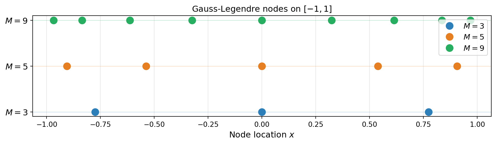
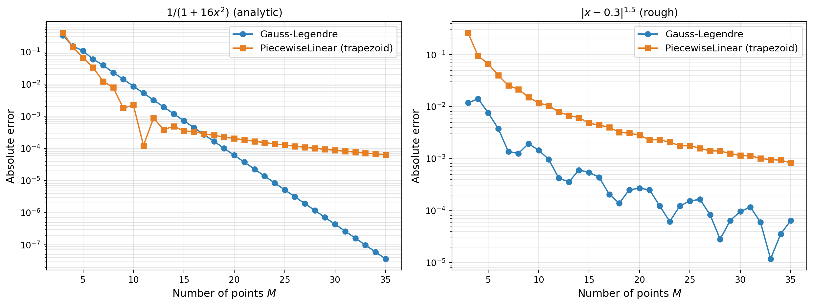
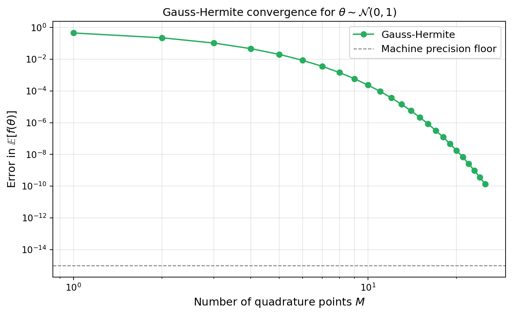
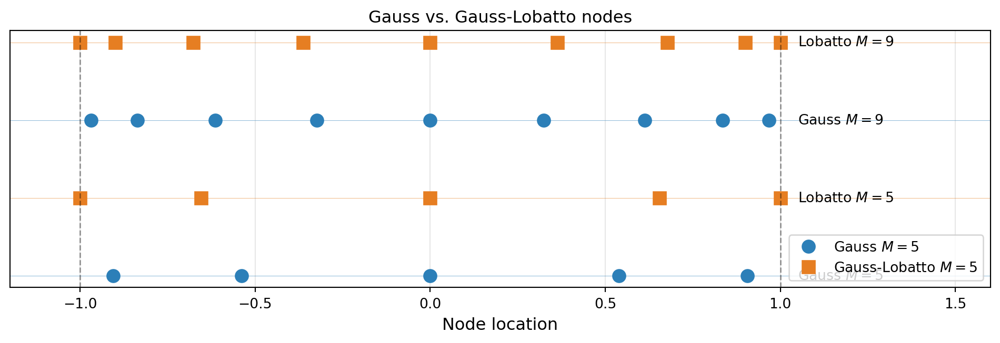

import numpy as np
np.random.seed(42)
import matplotlib.pyplot as plt
from pyapprox.util.backends.numpy import NumpyBkd
from pyapprox.surrogates.affine.univariate import (
LegendrePolynomial1D,
HermitePolynomial1D,
GaussQuadratureRule,
GaussLobattoQuadratureRule,
)
from pyapprox.surrogates.affine.univariate.piecewisepoly import (
PiecewiseLinear,
DynamicPiecewiseBasis,
EquidistantNodeGenerator,
)
from pyapprox.tutorial_figures._quadrature import (
plot_gauss_nodes,
plot_quad_convergence_comparison,
plot_gauss_hermite,
plot_lobatto,
)
bkd = NumpyBkd()Gauss Quadrature: Optimal Nodes from Orthogonal Polynomials
PyApprox Tutorial Library
Construct Gauss quadrature from orthogonal polynomials, derive the error estimate, and demonstrate exponential convergence for smooth functions.
TipDownload Notebook
Learning Objectives
After completing this tutorial, you will be able to:
- Explain why freeing node placement enables polynomial exactness of degree \(2M-1\) with \(M\) nodes
- Construct Gauss quadrature rules using
GaussQuadratureRuleandLegendrePolynomial1D - Derive the Gauss quadrature error estimate and explain why it implies exponential convergence for analytic functions
- Compare algebraic convergence of composite rules against the exponential convergence of Gauss rules
- Compute weighted expectations \(\mathbb{E}_\theta[f(\theta)]\) using
HermitePolynomial1D - Obtain nested Gauss-Lobatto grids via
GaussLobattoQuadratureRule
Prerequisites
Complete Piecewise Polynomial Quadrature before this tutorial. You should understand composite trapezoid and Simpson’s rules, their error formulas, and what polynomial exactness means.
Setup
Motivation: Beyond Algebraic Convergence
The previous tutorial showed that composite rules converge algebraically: the trapezoid rule at \(O(h^2)\) and Simpson’s rule at \(O(h^4)\), regardless of how smooth the integrand is. A \(C^\infty\) function benefits from a higher-order rule, but the convergence rate is always a fixed power of \(h\).
Can we do better? The composite rules constrain nodes to be equally spaced. If we free the node locations as well as the weights, we have \(M\) nodes + \(M\) weights = \(2M\) free parameters. By choosing all \(2M\) parameters optimally, we can integrate polynomials up to degree \(2M - 1\) exactly. This is Gauss quadrature.
Polynomial Exactness and Orthogonal Polynomials
The key result from approximation theory is:
An \(M\)-point quadrature rule with free nodes can achieve polynomial exactness of degree at most \(2M-1\). This maximum is attained if and only if the nodes are the roots of the degree-\(M\) orthogonal polynomial with respect to the integration weight.
For the standard interval \([-1, 1]\) with uniform weight \(w(x) = 1\), the orthogonal polynomials are the Legendre polynomials \(\{P_n\}_{n=0}^\infty\), satisfying
\[ \int_{-1}^{1} P_i(x)\, P_j(x)\, dx = \delta_{ij} \cdot \|P_i\|^2. \]
The \(M\) roots of \(P_M\) are the Gauss-Legendre nodes. The weights are then determined uniquely by the requirement that the rule integrate all polynomials up to degree \(2M-1\) exactly.
Using GaussQuadratureRule
GaussQuadratureRule constructs the quadrature rule from any orthonormal polynomial family. Pass the polynomial object and call with the desired number of points.
# Create Legendre polynomial and Gauss quadrature rule
poly = LegendrePolynomial1D(bkd)
poly.set_nterms(20) # Pre-allocate recurrence coefficients
gauss_rule = GaussQuadratureRule(poly)
# Get 5-point rule: nodes shape (1, M), weights shape (M, 1)
M = 5
nodes, weights = gauss_rule(M)fig, ax = plt.subplots(figsize=(10, 3))
plot_gauss_nodes(ax, gauss_rule, bkd)
plt.tight_layout()
plt.show()
Verifying Polynomial Exactness
An \(M\)-point Gauss rule integrates all polynomials up to degree \(2M-1\) exactly. PyApprox’s Legendre quadrature uses the probability measure \(w(x) = 1/2\) on \([-1,1]\), so the weights sum to 1 and compute expectations \(\mathbb{E}[f]\) rather than raw integrals \(\int f\,dx\).
M = 5
nodes, weights = gauss_rule(M)
def poly_deg9(x):
return x**9 + 2 * x**7 - x**3 + 1.0 # degree 9 = 2*5 - 1
# Exact expectation: (1/2) * integral over [-1,1] = (1/2)*2 = 1
exact_expectation = 1.0
# nodes: (1, M), weights: (M, 1)
approx = float(bkd.sum(weights[:, 0] * poly_deg9(nodes[0])))Gauss Quadrature Error Estimate
The error formula for Gauss quadrature with \(M\) nodes is a direct consequence of the interpolation error and the special structure of the Gauss nodes.
Derivation
For any \((2M)\)-times differentiable function \(f\), the \(M\)-point Gauss quadrature error is
\[ E_M[f] = \frac{f^{(2M)}(\xi)}{(2M)!} \int_a^b \left[\prod_{n=1}^M (x - x^{(n)})\right]^2 w(x)\, dx \]
for some \(\xi \in (a, b)\).
Why the square? The key insight is that the node polynomial \(\omega_M(x) = \prod_{n=1}^M (x - x^{(n)})\) is proportional to the degree-\(M\) orthogonal polynomial \(p_M(x)\). Any polynomial of degree \(\leq 2M-1\) is integrated exactly, so the error comes from the degree-\(2M\) term in \(f\)’s Taylor expansion. The degree-\(2M\) polynomial \([\omega_M(x)]^2\) has a factor of \(\omega_M\) that the Gauss rule annihilates, leaving one factor of \(\omega_M\) integrated against \(w(x)\).
More concretely, since \(\omega_M\) is proportional to \(p_M\):
\[ E_M[f] = \frac{f^{(2M)}(\xi)}{(2M)!}\, \|p_M\|_w^2, \]
where \(\|p_M\|_w^2 = \int_a^b [p_M(x)]^2\, w(x)\, dx\) is the squared norm of the orthogonal polynomial.
NoteWhy the Mean Value Theorem Applies
The integrand \([\omega_M(x)]^2\, w(x)\) is non-negative on \([a,b]\) (it is a square times a non-negative weight), so the mean value theorem for integrals applies directly to extract \(f^{(2M)}(\xi)\). This is a cleaner situation than the Newton-Cotes case, where the node polynomial may change sign.
Why Exponential Convergence?
The error formula \(|E_M[f]| \leq \frac{|f^{(2M)}(\xi)|}{(2M)!}\, \|p_M\|_w^2\) reveals why Gauss quadrature converges exponentially for analytic functions:
- For an analytic function, \(|f^{(k)}|\) grows at most geometrically in \(k\): roughly \(|f^{(k)}| \leq C \cdot R^k\) for some constants \(C\) and \(R\) related to the function’s nearest singularity in the complex plane.
- The factorial \((2M)!\) grows super-exponentially in \(M\).
- The norm \(\|p_M\|_w^2\) also decreases with \(M\).
The net result is that the error decays as
\[ |E_M[f]| \leq C \cdot \rho^{-2M} \]
where \(\rho > 1\) is determined by the Bernstein ellipse \(\mathcal{E}_\rho\) — the largest ellipse in the complex plane with foci at \(\pm 1\) inside which \(f\) is analytic. If \(a\) and \(b\) are the semi-major and semi-minor axes, then \(\rho = a + b\). The farther the singularities of \(f\) lie from \([-1, 1]\), the larger \(\rho\) is and the faster the convergence.
TipBernstein Ellipse Intuition
Consider the family of ellipses in the complex plane with foci at \(-1\) and \(+1\), parametrized by \(\rho > 1\). As \(\rho\) increases, the ellipse grows larger. The convergence rate is set by the largest such ellipse inside which \(f\) has no singularities (poles, branch points, etc.).
- A function with singularities far from \([-1,1]\) (large \(\rho\)) converges very quickly — e.g. \(e^x\) is entire, so \(\rho = \infty\) and the convergence is faster than any exponential.
- A function with singularities close to \([-1,1]\) (small \(\rho \gtrsim 1\)) converges slowly — the exponential rate \(\rho^{-2M}\) may look nearly algebraic for moderate \(M\).
Gauss vs. Composite: Exponential Convergence in Practice
For functions with bounded derivatives of all orders (analytic functions), Gauss quadrature converges exponentially: the error decays roughly as \(e^{-cM}\) for some constant \(c > 0\) that depends on the function’s complex singularity structure. Composite rules are always limited to algebraic convergence regardless of function smoothness.
def f_analytic(x):
"""Analytic function: large but finite bandwidth."""
return 1.0 / (1.0 + 16.0 * x**2)
# Exact: integral of 1/(1+16x^2) over [-1,1] = arctan(4)/2
true_analytic = np.arctan(4.0) / 2.0
def f_rough(x):
"""Holder continuous but not Lipschitz: |x - 0.3|^1.5."""
return np.abs(x - 0.3) ** 1.5
# integral of |x-0.3|^1.5 over [-1,1] = (2/5)*(1.3^2.5 + 0.7^2.5)
true_rough = (2.0 / 5.0) * (1.3**2.5 + 0.7**2.5)
# Piecewise linear (trapezoid) rule on [-1, 1]
node_gen_11 = EquidistantNodeGenerator(bkd, (-1.0, 1.0))
trap_rule_11 = DynamicPiecewiseBasis(bkd, PiecewiseLinear, node_gen_11)
Ms = np.arange(3, 36)
gauss_err_analytic, trap_err_analytic = [], []
gauss_err_rough, trap_err_rough = [], []
for M in Ms:
# Gauss-Legendre (prob measure weights → multiply by 2 for Lebesgue)
nd, wt = gauss_rule(M)
nd_np = bkd.to_numpy(nd[0])
wt_np = bkd.to_numpy(wt[:, 0])
gauss_err_analytic.append(abs(2 * wt_np @ f_analytic(nd_np) - true_analytic))
gauss_err_rough.append( abs(2 * wt_np @ f_rough(nd_np) - true_rough))
# Piecewise linear (Lebesgue measure weights)
trap_rule_11.set_nterms(M)
pts, wts = trap_rule_11.quadrature_rule()
pts_np = bkd.to_numpy(pts[0])
wts_np = bkd.to_numpy(wts[:, 0])
trap_err_analytic.append(abs(wts_np @ f_analytic(pts_np) - true_analytic))
trap_err_rough.append( abs(wts_np @ f_rough(pts_np) - true_rough))
fig, axs = plt.subplots(1, 2, figsize=(13, 5))
plot_quad_convergence_comparison(
axs, Ms, gauss_err_analytic, trap_err_analytic,
gauss_err_rough, trap_err_rough,
)
plt.tight_layout()
plt.show()
For \(1/(1+16x^2)\), the Gauss error steadily decreases from \(\sim 10^{-1}\) at \(M = 3\) to \(\sim 10^{-8}\) at \(M = 35\) — a clear exponential trend on the semi-log plot, though the rate is modest (\(\rho \approx 1.28\)) because the poles at \(\pm i/4\) sit close to \([-1,1]\). The trapezoid rule, limited to algebraic \(O(M^{-2})\) convergence, stalls around \(10^{-4}\) over the same range. For the rough function both methods converge algebraically, confirming that exponential Gauss convergence depends on function smoothness.
NoteWhy \(1/(1+16x^2)\) Converges Slowly at First
The function \(f(x) = 1/(1+16x^2)\) has poles at \(x = \pm i/4\) in the complex plane — only distance \(1/4\) from the real interval \([-1,1]\). The Bernstein ellipse that passes through these poles is quite small, giving \(\rho \approx 1.28\). This means the error decays as roughly \(1.28^{-2M}\), which requires fairly large \(M\) before the exponential behavior becomes visually obvious. For \(M = 3\)–\(10\) the convergence can look nearly algebraic.
For comparison, \(e^x\) is entire (no singularities anywhere in \(\mathbb{C}\)), so its Bernstein \(\rho\) is effectively infinite and Gauss quadrature converges superexponentially.
Weighted Quadrature for Expectations
In uncertainty quantification (UQ) we need expectations
\[ \mathbb{E}_\theta[f(\theta)] = \int f(\theta)\, p(\theta)\, d\theta, \]
where \(p(\theta)\) is a probability density function (PDF). Rewriting this as a standard Legendre integral requires a change of variables; a cleaner approach is to directly use a Gauss rule matched to \(p\).
For \(\theta \sim \mathcal{N}(0, 1)\), the natural weight is the standard Gaussian \(w(\theta) = e^{-\theta^2/2}/\sqrt{2\pi}\), and the corresponding orthogonal polynomials are the Hermite polynomials. The resulting Gauss-Hermite rule integrates \(f(\theta) p(\theta)\) exactly for polynomials \(f\) up to degree \(2M-1\).
# Gauss-Hermite rule via HermitePolynomial1D
hermite_poly = HermitePolynomial1D(bkd)
hermite_poly.set_nterms(30)
hermite_rule = GaussQuadratureRule(hermite_poly)
def f_qoi(theta):
"""A smooth QoI: exponential decay."""
return np.exp(-0.5 * theta**2) * np.cos(theta)
# Exact expectation: E[exp(-θ²/2)cos(θ)] = √2/2 · exp(-1/4) (computed via sympy)
exact_mean = np.sqrt(2.0) / 2.0 * np.exp(-0.25)
Ms = np.arange(1, 26)
gh_errors = []
for M in Ms:
nd, wt = hermite_rule(M)
nd_np = bkd.to_numpy(nd[0])
wt_np = bkd.to_numpy(wt[:, 0])
approx_mean = wt_np @ f_qoi(nd_np)
gh_errors.append(abs(approx_mean - exact_mean))
fig, ax = plt.subplots(figsize=(8, 5))
plot_gauss_hermite(ax, Ms, gh_errors)
plt.tight_layout()
plt.show()
Gauss-Lobatto Rules
The standard Gauss rule places nodes strictly in the interior of \([a, b]\). When building nested quadrature hierarchies (required by sparse grid methods) it is useful to include the endpoints as fixed nodes and optimize the remaining interior nodes. This gives the Gauss-Lobatto rule.
A Gauss-Lobatto rule with \(M\) points achieves exactness degree \(2M-3\) (two degrees less than Gauss, since two nodes are fixed). The trade-off is nestedness: the \(M\)-point and \((2M-1)\)-point Lobatto grids share nodes, so function evaluations can be reused when increasing the level.
lobatto_rule = GaussLobattoQuadratureRule(LegendrePolynomial1D(bkd))
fig, ax = plt.subplots(figsize=(10, 3.5))
plot_lobatto(ax, gauss_rule, lobatto_rule, bkd)
plt.tight_layout()
plt.show()
NoteWhy Gauss-Lobatto for Sparse Grids?
Sparse grid algorithms assemble an approximation as a combination of tensor products at successive refinement levels. For this combination to be efficient, the node sets at level \(\ell\) must be nested in the node sets at level \(\ell+1\) — the same points are reused rather than re-evaluated. Gauss-Lobatto rules possess this nesting property (because the endpoints are fixed), whereas plain Gauss-Legendre rules are non-nested. The price is a small reduction in exactness degree for the same \(M\).
ImportantArray Shape Convention
PyApprox stores quadrature nodes as (nvars, nsamples) — for univariate rules this is (1, M). Weights are (M, 1). Follow this convention when passing nodes to models or interpolants.
Key Takeaways
- Gauss quadrature places nodes at roots of orthogonal polynomials associated with the integration weight, achieving exactness of degree \(2M-1\) with \(M\) nodes.
- The error formula \(E_M[f] = \frac{f^{(2M)}(\xi)}{(2M)!}\|p_M\|_w^2\) shows that the \((2M)!\) factorial in the denominator overwhelms the geometric growth of \(f^{(2M)}\) for analytic functions, giving exponential convergence \(O(\rho^{-2M})\).
- The convergence rate \(\rho\) is determined by the Bernstein ellipse — the largest ellipse around \([a,b]\) in the complex plane inside which \(f\) is analytic.
- The orthogonal polynomial family is matched to the weight: Legendre for uniform (Lebesgue) integration, Hermite for Gaussian expectations.
- Gauss-Lobatto rules fix the endpoints \(\pm 1\) as nodes, enabling nested hierarchies that are essential for efficient sparse grid construction.
Exercises
NoteExercises
Polynomial exactness. Verify by computation that the 3-point Gauss-Legendre rule integrates \(x^4\) exactly but makes a non-zero error on \(x^6\). What is the maximum degree \(d\) such that the \(M\)-point rule is exact?
Rough function. Repeat the convergence study with \(f(x) = |x - 0.3|^{1.5}\). How do Gauss and composite trapezoid compare? Can you predict the algebraic rate from the function’s regularity?
Non-uniform distribution. Use Gauss-Legendre (after an affine change of variables) to estimate \(\mathbb{E}_\theta[\cos(\theta)]\) for \(\theta \sim \mathcal{U}(0, \pi)\). How many points are needed to reach error below \(10^{-10}\)? Compare with Gauss-Hermite on the same problem after standardising \(\theta\).
Nested Lobatto hierarchy. Show that the 3-point and 5-point Gauss-Lobatto grids are nested (the 3-point nodes are a subset of the 5-point nodes). Verify this is not the case for plain Gauss-Legendre.
Next Steps
- Lagrange Interpolation: Polynomials on Optimal Points — Build interpolants from quadrature nodes and connect interpolation to integration
- Piecewise Polynomial Interpolation: Local Basis Functions — When global polynomials fail on rough functions